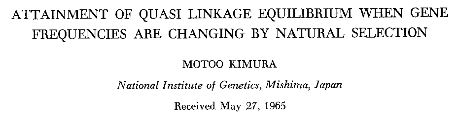

The effects of migration on evolutionary dynamics in natural populations of Drosophila melanogaster
2022-07-15
Evolution 101 & Introduction
Evolution 101
- Evolutionary Forces
- Selection, Drift, Mutations, Gene Flow
- Basis for Adaptation
- Rapid Adaptation
- Epistasis
Evolutionary forces
Evolutionary forces: Drift
Evolutionary forces: Selection
Evolutionary forces: Selection - Local adaptation
Evolutionary forces: Mutations
Evolutionary forces: Gene flow
Adaptive Consequences of Gene Flow
Assumptions of the current theory
- Evolution is slow and it cannot keep up with ecological changes.
- Evolutionary and ecological timescales are separate.
Rapidly and dynamically changing environments

Revisiting Gene flow - Changing environments
Rapid adaptation
Basis of Adaptive Response
- Phenotypic variation
- Differential fitness
- Heritability of these traits
Basis of Adaptive Response
- Phenotypic variation
- Differential fitness
- Heritability of these traits
Basis of Adaptive Response
- Phenotypic variation
- Differential fitness
- Heritability of these traits
Basis of Adaptive Response
- Phenotypic variation
- Differential fitness
- Heritability of these traits
Basis of Adaptive Response
- Phenotypic variation
- Differential fitness
- Heritability of these traits
Genetic Architecture of Fitness-Associated Traits

Epistasis
- Functional
- Statistical
Epistasis - Functional
- Functional
- Statistical
Epistasis - Statistical
- Functional
- Statistical

Gene Flow - Epistasis - Rapid Adaptation
- Classical understanding
- Genetic architecture of complex traits
Gene Flow - Epistasis - Rapid Adaptation
- Classical understanding
- Dynamically changing environments
- Rapid adaptive responses
- Pervasive epistasis in complex traits
Gene Flow - Epistasis - Rapid Adaptation
- Classical understanding
- Dynamically changing environments
- Rapid adaptive responses
- Pervasive epistasis in complex traits
Gene Flow - Epistasis - Rapid Adaptation
- Classical understanding
- Dynamically changing environments
- Rapid adaptive responses
- Pervasive epistasis in complex traits

Gene Flow - Epistasis - Rapid Adaptation
- Classical understanding
- Dynamically changing environments
- Rapid adaptive responses
- Pervasive epistasis in complex traits
- Epistasis can be adaptive

Gene Flow - Epistasis - Rapid Adaptation
- Classical understanding
- Dynamically changing environments
- Rapid adaptive responses
- Pervasive epistasis in complex traits
- Epistasis can be adaptive
- Gene flow can also be adaptive
Migration Events
Let’s consider a simple model
Migration Events
Let’s consider a simple model
- Focal population \(F\)
\(F\)
Migration Events
Let’s consider a simple model
- Focal population \(F\)
- Migrant population \(M\)
\(F\)
\(M\)
Migration Events
Let’s consider a simple model
- Focal population \(F\)
- Migrant population \(M\)
- Unidirectional Migration
- From \(M\) to \(F\)
- Single time
\(F\)
\(M\)
Fitness Effects of a Single Migration Event: Predictions
- No effect on fitness
- \(F\) and \(M\) are locally adapted, high levels of isolation, migration results in no gene flow
- \(F\) and \(M\) have similar trait values in focal environment, gene interactions are additive
Fitness Effects of a Single Migration Event: Predictions
- No effect on fitness
- Decreases fitness
- \(F\) and \(M\) are locally adapted, gene interactions are additive
- \(F\) and \(M\) have similar trait values in focal environment, gene interactions are dominated by negative epistasis
Fitness Effects of a Single Migration Event: Predictions
- No effect on fitness
- Decreases fitness
- Increases fitness
- Regardless of being locally adapted, gene interactions are dominated by positive epistasis
Adaptive Consequences of a Single Migration Event: Predictions
- No effect
Adaptive Consequences of a Single Migration Event: Predictions
- No effect
- Impedes adaptation
- Dobzhansky Muller Incompatibilities
- Swamping etc.
- Decreased fitness after migration with possible recovery to under original fitness
Adaptive Consequences of a Single Migration Event: Predictions
- No effect
- Impedes adaptation
- Facilitates adaptation
- Variation is good regardless of the source (assumes positive epistasis)
- Always increased fitness
- Condition dependent (can be a mix of positive and negative epistasis)
- Decreased fitness followed by increasing fitness after several generations
Best(!) Model System: Drosophila melanogaster
Population Demography of D. melanogaster
Singh and Long (1992)
Local Adaptation and Latitudinal Clines
Adrion et al. (2015)
Rapid Adaptation
Direct Experiments on the Effects of Migration on Rapid Adaption
Research Questions
- Does migration result in enough gene flow to affect populations?
- What is the effect of migration on rapid adaptation?
- No effect, facilitate, or impede
- What is the relationship between variation and the adaptive response?
- Amount of variation vs. the nature of variation
Research Hypothesis
- Single time large migration event from a remote population to a focal population, after temperature mediated selection, might:
- Have no effects on the adaptive response
- Impede adaptation by decreasing the response
- Facilitate adaptation by increasing the response
Experimental Design

Experimental Design


Experimental Design

Experimental Design

Experimental Design

Experimental Design

Experimental Design

Experimental Design


Experimental Design
Experimental Design

Experimental Design

Experimental Design
Experimental Design
Experimental Design
Experimental Design

Experimental Design
Experimental Design
Experimental Design
Results
Results: Fitness Effects of 1:1 Gene Flow
Results: Gene Flow as a Result of a Migration Event
| F | PF | P | PM | |
|---|---|---|---|---|
| PF | 137.115 | |||
| P | 148.423 | 77.341 | ||
| PM | 144.548 | 68.203 | 75.732 | |
| M | 157.985 | 97.717 | 100.952 | 89.629 |
Results: Rapid Adaptation
| Trait | Selection | greater | less |
|---|---|---|---|
| Development Time | Summer-like | 1.00000 | 0.03125* |
| Development Time | Fall-like | 0.03125* | 1.00000 |
| Viability | Summer-like | 0.03125* | 1.00000 |
| Viability | Fall-like | 0.03125 | 1.00000 |
| Fecundity | Summer-like | 1.00000 | 0.03125* |
| Fecundity | Fall-like | 0.96875 | 0.06250 |
| Heat Tolerance (Females) | Summer-like | 1.00000 | 0.03125* |
| Heat Tolerance (Females) | Fall-like | 1.00000 | 0.03125* |
| Heat Tolerance (Males) | Summer-like | 1.00000 | 0.03125* |
| Heat Tolerance (Males) | Fall-like | 1.00000 | 0.03125* |
| Starvation Resistance (Females) | Summer-like | 0.78125 | 0.31250* |
| Starvation Resistance (Females) | Fall-like | 1.00000 | 0.03125* |
| Starvation Resistance (Males) | Summer-like | 0.90625 | 0.15625 |
| Starvation Resistance (Males) | Fall-like | 0.93750 | 0.09375 |
| Trait | greater | less |
|---|---|---|
| Development Time | 0.03125* | 1.00000 |
| Viability | 0.78125 | 0.31250 |
| Fecundity | 0.03125* | 1.00000 |
| Heat Tolerance (Females) | 0.93750 | 0.09375 |
| Heat Tolerance (Males) | 0.03125* | 1.00000 |
| Starvation Resistance (Females) | 1.00000 | 0.03125* |
| Starvation Resistance (Males) | 0.40625 | 0.68750 |
Results: Rapid Adaptation
Results: Temperature-mediated adaptation
| Df | Pillai | approx F | num Df | den Df | Pr(>F) | |
|---|---|---|---|---|---|---|
| Selection | 1 | 0.853 | 111.454 | 6 | 115 | 1.52e-45 *** |
| Time | 1 | 0.782 | 68.814 | 6 | 115 | 9.45e-36 *** |
| Population | 4 | 0.831 | 5.160 | 24 | 472 | 2.08e-13 *** |
| Selection:Time | 1 | 0.853 | 111.454 | 6 | 115 | 1.52e-45 *** |
| Selection:Population | 4 | 0.175 | 0.901 | 24 | 472 | 6.01e-01 |
| Time:Population | 4 | 0.430 | 2.367 | 24 | 472 | 3.26e-04 *** |
| Selection:Time:Population | 4 | 0.175 | 0.901 | 24 | 472 | 6.01e-01 |
| Residuals | 120 | NA | NA | NA | NA | NA |
Results: Gene Flow Facilitated Adaptive Response
| Time | Selection | Population | greater | less |
|---|---|---|---|---|
| Pre-selection | PF vs PF[sim] | 0.69514 | 0.304863 | |
| Pre-selection | PM vs PM[sim] | 0.99832 | 0.001681** | |
| Post-selection | Summer-like | PF vs PF[sim] | 0.98807 | 0.011932* |
| Post-selection | Summer-like | PM vs PM[sim] | 0.99933 | 0.000671*** |
| Post-selection | Fall-like | PF vs PF[sim] | 0.02150* | 0.978500 |
| Post-selection | Fall-like | PM vs PM[sim] | 0.00416** | 0.995844 |
Results: Lab - Field Palallelism
Results: Epistasis
- No effect
- Impedes adaptation
- Facilitates adaptation
- Variation is good regardless of the source (assumes positive epistasis)
- Always increased fitness
- Condition dependent (can be a mix of positive and negative epistasis)
- Decreased fitness followed by increasing fitness after several generations
Summary
- Migration events resulted in gene flow
- Observations of rapid adaptation
- Direct response to selection in only 5 generations
- Differential response to selection regimes
- Parallel responses to both selection regimes across populations
- Temperature as the main driver of these responses
- Adaptive role of migration
- Epistatic interactions driving adaptation
Inferring population demography and geographic connectivity in natural D. melanogaster populations using mitochondrial genome
Questions
Does spatial distance explain the variation in D. melanogaster mitochondrial genome?
How can we infer geographic connectivity between D. melanogaster populations?
Design and Method
Design and Method
Sampling
6 Locations 20 Samples
Outgroups:
2 Locations 5 Samples
Long Range PCR
Covering most of the genes on mtDNA
From ~1500 to ~13000
Sequencing
127 samples
Sample Processing
111 Samples
44 variant sites
54 haplotypes
Analysis
Population Genetic Analysis
Bayesian Methods with BEAST & BSSVS
To estimate potential migration events
Results: Relatedness
Bayes Factor Interpretation
| BF | Interpretation | Supports |
|---|---|---|
| >100 | Extreme support | HA |
| 30 to 100 | Very strong support | HA |
| 10 to 30 | Strong support | HA |
| 3 to 10 | Moderate support | HA |
| 1 to 3 | Anectodal support | HA |
| =1 | No evidence | HA or H0 |
| 0.3 to 1 | Anectodal support | H0 |
| 0.1 to 0.3 | Moderate support | H0 |
| 0.03 to 0.1 | Strong support | H0 |
| 0.01 to 0.03 | Very strong support | H0 |
| <0.01 | Extreme support | H0 |
Results: BSSVS
| LOCATION | Zambia | Austria | FL-Mia. | MD-Chu. | PA-Lin. | PA-Ind. | ME-Wel. |
|---|---|---|---|---|---|---|---|
| ME-Eustis | 0.220 | 0.363 | 0.153 | 237.564 | 1.502 | 0.651 | 1 |
| ME-Wells | 0.440 | 0.186 | 0.186 | 21.381 | 0.09 | 0.29 | |
| PA-Indian | 0.401 | 0.744 | 237.564 | 9.371 | 0.153 | ||
| PA-Linvilla | 0.121 | 237.564 | 0.121 | 0.401 | |||
| MD-Churchville | 237.564 | 4.639 | 1 | ||||
| FL-Miami | 7.804 | 0.29 | |||||
| Austria | 0.401 |
Summary
mtDNA is conserved in D. melanogaster, yet the diversity is not low.
Population structure
- Cannot be explained by spatial distance between populations
Geographic connectivity in the mid- and long-range but not short-range
These methods can be used to infer migration rates between populations with temporal sampling.
Conclusion
Conclusion
Dynamically changing environments
Rapid adaptation
Prevalent views:
- Migration is maladaptive
- More variation is adaptive
The role of migration is context dependent
Acknowlegements
Paul
Committee Members
- Paul Sniegowski
- Dustin Brisson
- Mia Levine
- Tim Linksvayer
Lab Members
- Patricka Williams-Simon
- Skyler Berardi
- Jack Beltz
- Hayes Oken
- Edith Oteng
- Caroline Barnhart
- Charlie Pfeiffer
- Winson Liu
- Sekia Phillips
Previous Members
- Seth Rudman
- Evgeny Brud
- Subhash Rajpurohit
- Amy Goldfischer
- Emily Behrman
- Vinayak Marthur
Some Amazing Undergrads
- Valentina Escudero
- Yonatan Babore
- Emma Torija
- Ashleigh Williams
- Liam Forsythe
- Jordy Atencia
Collaborators and Funding sources
Brisson Lab
- Matt Mitchell
- Zach Oppler
Petrov Lab
Biology Department
- Brian Gregory
- Junhyong Kim
- Dan & Winnie
- Linda Robinson
- Faculty
- Staff
- Housekeeping
- Robin Sherwood
- Leah Dennis
- Colleen Gasiorowski
- Ed Friess
- Adam Linder